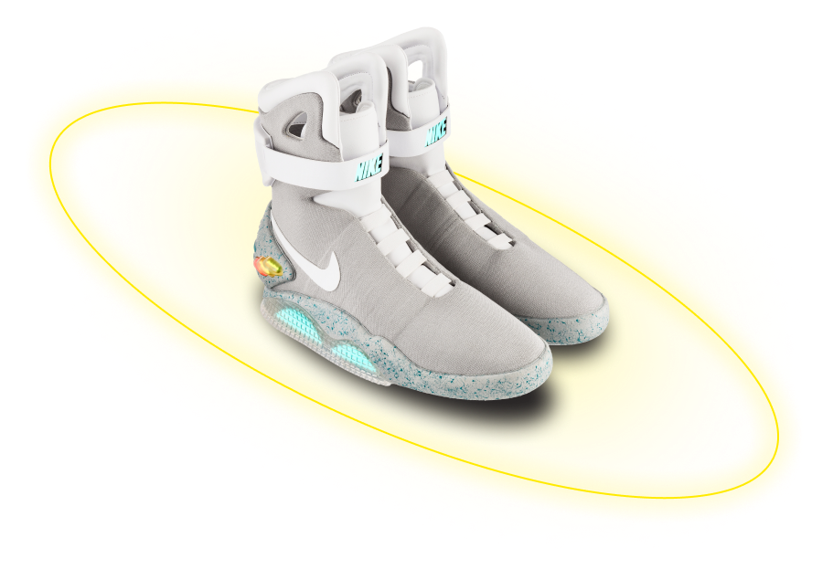

- стиль
- cкорость
Nike air mag

Air Mag
Это не просто кроссовки — это шаг в будущее. С уникальным дизайном и передовыми технологиями, эти кроссовки вдохновлены легендарной киноделией и готовы сопровождать вас в любых приключениях.

- инновационная технология амортизации, которая обеспечивает непревзойденную поддержу суставов
- высококачественные синтетические материалы для долговечности и комфорта